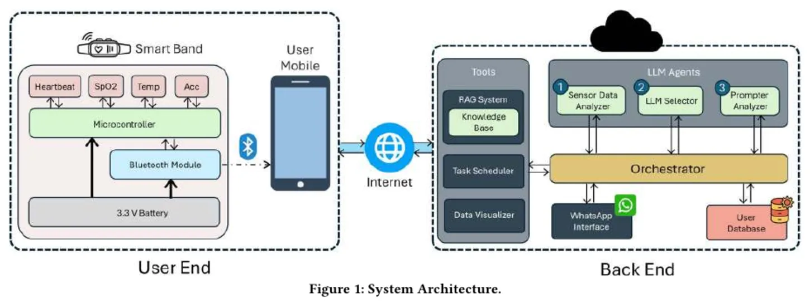
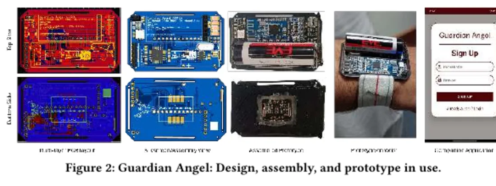

LLM Enhanced Wearables
Low-cost sensing and plain-language WhatsApp health feedback for users with limited health literacy.


Problem
Raw wearable measurements are difficult to interpret without clinical context. Access to in person guidance is also uneven in many low resource settings.
Work
- Designed a $12.72 screenless ATmega328P band and BLE firmware.
- Combined PPG with temperature and motion sensing.
- Co-developed plain language WhatsApp health feedback and supported a 20 participant study over 96 hours.
Result
- Produced a public preprint and supporting system implementation.
- Mean self rated health data comprehension rose from 3.05 to 3.60 out of 5.